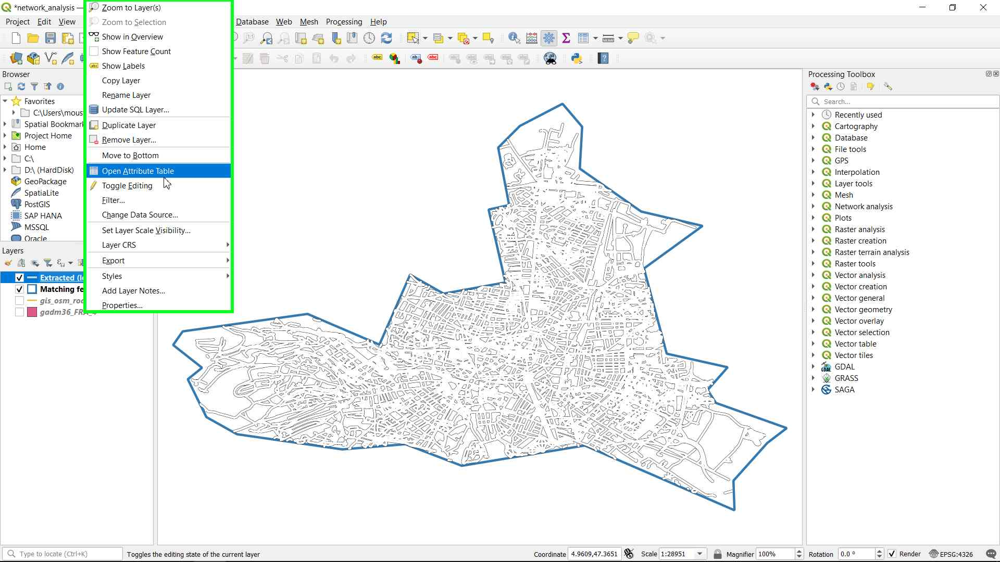
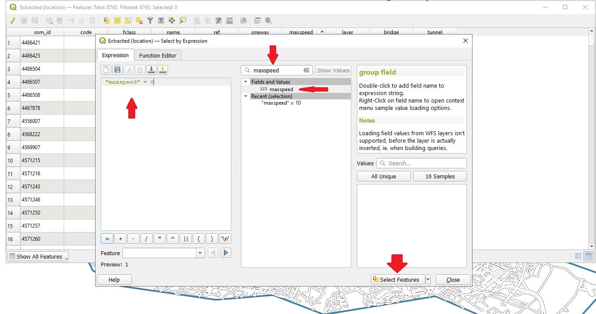
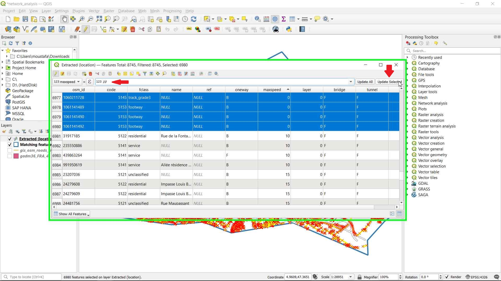
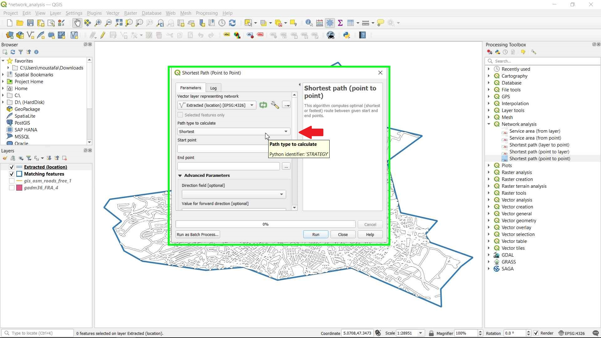
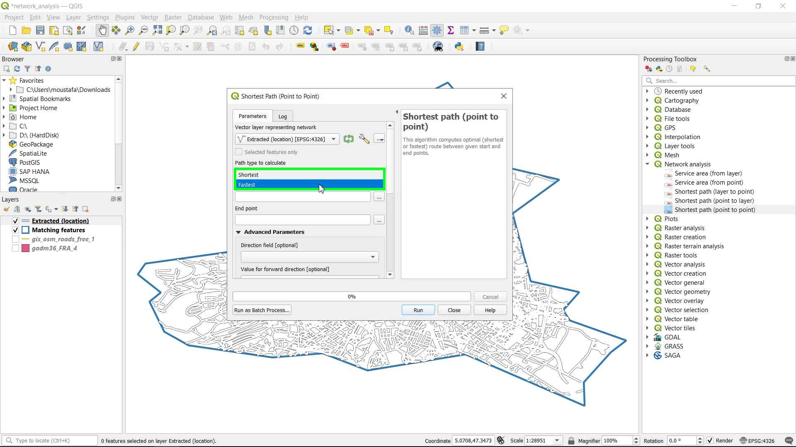

Point to Point Analysis (Fastest path):
-
This is the second and final tutorial on GIS network analysis (Point-to-point analysis) Where we will calculate the fastest route between 2 points in Dijon city.
-
We will continue from where we left of in the first tutorial you can find it point-to-point-shortest-path
Goal:
-
Explore some of GIS operations like selecting data by expression and editing data inside the Attribute Table.
-
Calculate the fastest route between two points in the city of Dijon using OSM (Open Street Map) free data.
Required data:
Data Sources:
We will use the same data we extracted on the last tutorial:
- Matching features layer which is extracted from a shapefile containing the cantons of France which is the boundaries of Dijon canton.
- Extracted (location) layer which contains the roads inside Dijon canton.
Step by Step Tutorial:
Step 1: Right-click on the Extracted (location) layer and select Open Attribute Table:

Step 2: Sort the values inside the Attribute table then edit it:
-
We need to sort the maxspeed field by ascending order by clicking on it one time, we will see that there are alot of rows that have the value of zero, we need to fix this.
-
We will start by selecting all the values that have a 0 value by clicking on the Select by expression icon:
- Then we search for the field maxspeed and double click on it to select it for the expression, and now we can complete the expression as follow "maxspeed" = 0

- Now we click on the Select features button, we will see that all the rows that has a value of 0 in the maxspeed field are now selected.
-
Then, we will edit all the selected values to be 10 (I know this is not the correct way to edit the data, in the real world we need to insert the correct maxspeed value for each road, but this is only for practice, so we can make pick any value for those missing data which will be better than leaving it as zeros).
-
We need to turn on the editing mode to start editing the data, and from the field dropdown menu we select the maxspeed field:
- We type the value 10 inside the update values box and click on the Update Selected to only update the selected values.
[!WARNING] If you clicked on the Update All button all the values inside the maxspeed field in the Attribute Table will be changed to 10 (This is not what we need!)

- Now deselect all the values bu clicking on the Deselect all features from the layer icon, and then save the edits and turn off the editing mode, then close the Attribute Table:
Step 3: Calculate the Fastest path between two points (Start and End points):
-
Open the Processing Toolbox by Clicking on the Processing menu then chosing the Toolbox:
-
From the Processing Toolbox, expand the Network analysis, and open the Shortest path (point-to-point) algorithm:
-
Make sure that the Extracted (location) layer is selected as the Vector layer representing network.
-
In the Path type to calculate choose the Fastest.


- choose the Start and End point:

- In the Advanced parameter, choose the oneway field as the Direction field, and F for the Value for forward direction, T for Value for backward direction, B for Value for both directions, and maxspeed as the Speed field, Finally click Run to run the algorithm:

- A new layer called Shortest path will be created, let’s choose a different style like (Topo main road) so we can see it:
- Right-click on the Shortest path layer, then, click on the Zoom to layers to see the end result:
- That's it, We have the fastest route we can choose between the Starting and ending point by considering the maxspeed of each road in our network data set.